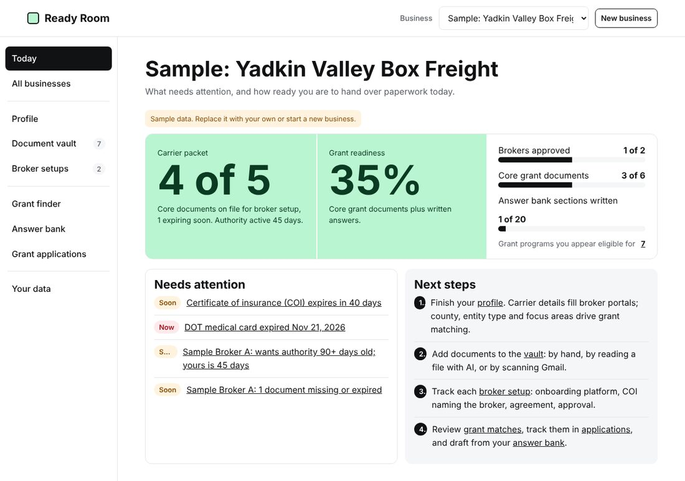
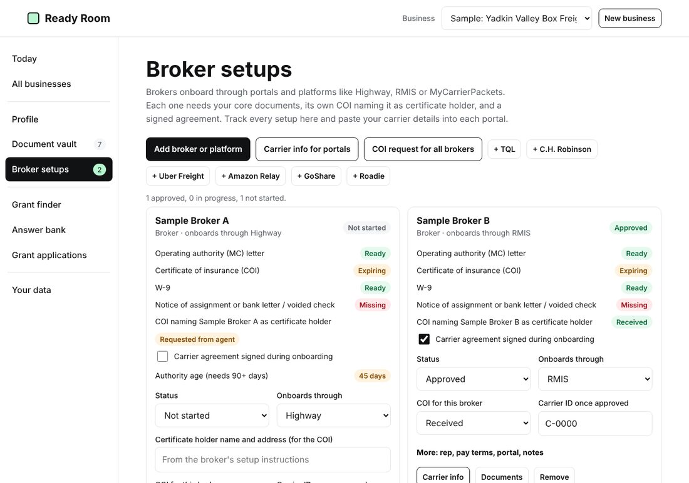
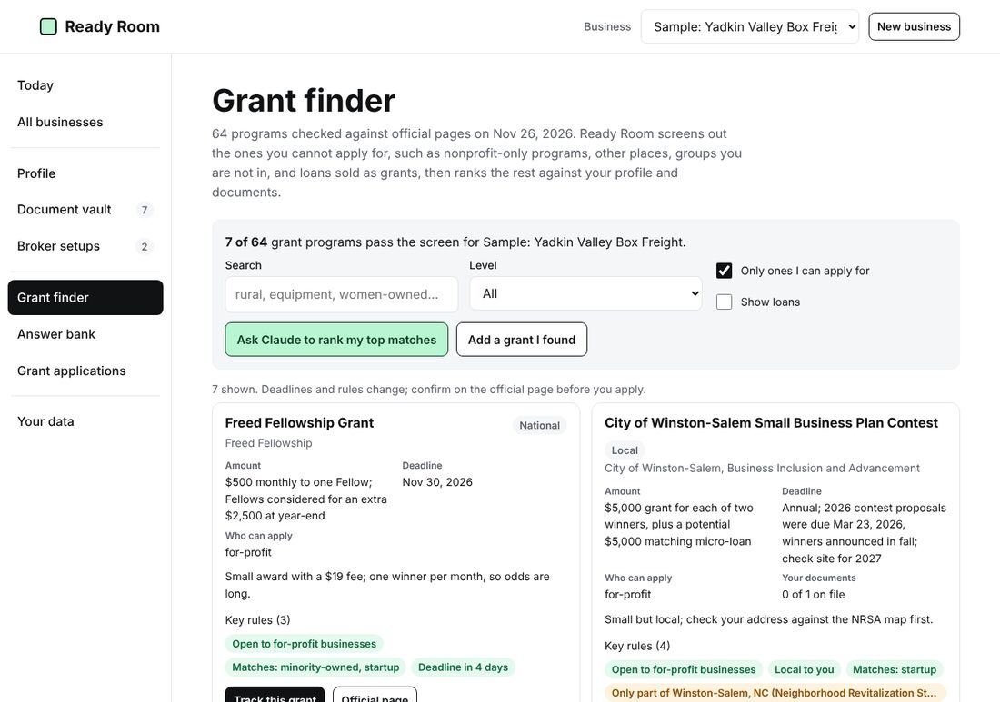
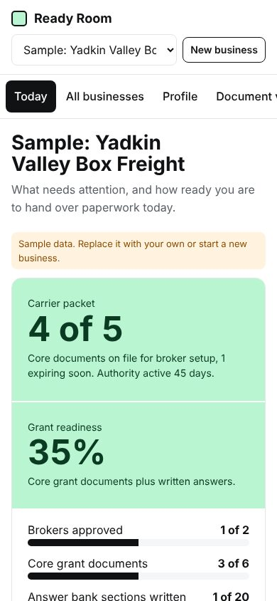

I run a box truck carrier in Winston-Salem, write grant proposals, and spent six years in clinical trial operations, most recently as CRC Lead. I build AI tools for the paperwork that slows small operators down.

I grew up in Winston-Salem, and my first job was at the public library downtown, helping people find what they needed. After UNC Chapel Hill I spent six years in clinical research, from COVID vaccination and monoclonal antibody trials to coordinating head and neck and lung cancer trials at UNC Lineberger as CRC Lead. That job was regulated paperwork, hard deadlines and plain explanations for patients.
Now I own 5908 Logistics, a box truck freight, courier and moving company. I'm also in New Majority Capital's bETA acquisition accelerator with a family HVAC venture, and I write grant proposals, including one for a vocational rehabilitation provider.
One business profile and one document vault, reused for broker setups and grant applications.
When my trucking authority went active, every broker asked for the same paperwork, and my documents were spread across email, my phone and my insurance agent's inbox. My grant work had the same problem. So I built one tool for both.
What it does
My role
Product owner and first user. I defined the problem, the workflow, the screening rules and the prompts, built it with Claude, and put each version through role-played reviews before changing it.

Plain code handles the rules: who is eligible, what expired, what is missing. Claude handles reading, judging fit and writing. It never submits anything.
Typed by hand, a PDF or photo read by Claude, or attachments found by scanning Gmail.
Entity, location, carrier details, focus areas. Every document with issuer, dates and a link. The files are never copied.
Checklist per broker, COI request to the agent, carrier info for portals.
Screen, rank, track, budget and draft from the answer bank.
Reads a PDF or a phone photo and fills in the type, issuer, dates and coverage limits for the owner to check.
Finds document attachments and onboarding invites already in the inbox, and skips sales pitches.
Ranks only programs that passed the rules, with a reason and the biggest gap for each.
Answers each question from the owner's own words, within its word limit, and marks missing facts as [NEED: …].
Each version went to reviewers who hadn't built it. So far these are AI reviewers, each given one role: a fact-checker, a new owner-operator, a grant writer managing 15 clients, a program reviewer, a QA engineer and a first-time user on a phone. The next version fixed what they found. Real users start in December, and their feedback goes in the same log.
| A carrier who isn't women-owned or a veteran was shown women-only and veteran-only grants | Added must-have rules to the catalog, checked in code before any AI call |
| My essay claimed results the tool didn't have yet | Rewrote it to describe only what had happened, plus what I'm measuring |
| North Carolina ended HUB certification in July 2026 | Switched to NCSBE in the document types |
| "Brokers onboard through portals, and each one needs its own COI" | Per-broker onboarding platform, COI status, an email to the agent, and the agreement |
| "The screen lets a one-truck LLC into SBIR, export and startup-tech grants" | Encoded excluded business types, R&D, export, minimum age and size rules. The sample carrier went from 14 "eligible" to 6 real ones. |
| "With 15 clients I can't open each one to see what's due" | An all-businesses view and a calendar export with reminders |
| "Drafting is one text box with no word counts" | One answer per question, live counts against each limit, five saved versions |
| Typing a deadline lost focus and could save the year as 0002 | Fields redraw only after you leave them, checked in a real browser |
| An AI draft could save into the wrong client if you switched mid-run | Every AI result is tied to the business it started on |
| "Portals take one field at a time, and a policy renewal means new COIs for every broker" | A copy-per-field carrier panel and one COI request covering every broker |
| A one-truck carrier was still shown artist grants and a diesel-replacement grant | More rules encoded and 23 more Triad programs verified, 64 in all |
| Retyping my carrier details and ten broker sign-ups | A starter file loads 5908 Logistics in one step, with a setup checklist that names what is missing |
| Approvals arrive by email from RMIS, Highway and brokers | "Check Gmail for approvals": Claude suggests the status and carrier ID, and nothing changes until I accept |
| "There's nowhere to load my file on first open, and the COI request marks brokers before I've sent it" | File picker on the welcome screen, a preview where I pick brokers, marked only after I confirm. Seven phone layout fixes, 65 automated checks |


Starting December 2026, every 5908 Logistics broker setup and every grant application I write runs through Ready Room. I'll report these numbers after 60 days.
| Measure | Why it matters |
|---|---|
| Minutes to complete a broker setup | Time to a first load with a new broker |
| Setups sent back for a missing or expired document | Each one delays revenue |
| Hours from finding a grant to a submitted draft | The cost that keeps owners from applying at all |
| Programs screened out before any writing | Time saved on grants an owner could never win |
Eligibility is checked in code, so it gives the same answer every time and can be audited. Claude explains and ranks what passes.
Carrier and grant documents hold EINs and bank details. Ready Room keeps the record and the link, not another copy.
In clinical research an undocumented detail becomes an audit finding. In a grant it can cost the award.
I would start with the two groups I know from the inside, in Winston-Salem and the rest of the Triad. The tools come from Ready Room's own rules. I also wrote up its grant screener as a custom GPT configuration, because most owners I'd work with already use ChatGPT.
Monthly workshop: "Grants you can actually win" (90 minutes)
Jordan Hairston · Winston-Salem, NC · dispatch@5908logistics.com